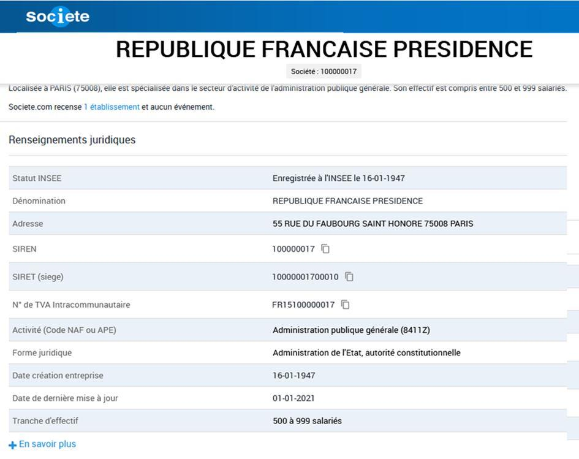

Beaucoup de gens viennent me demander mon avis sur le fait que la République française est, selon le site web d’informations légales « société.com » 1, enregistré à l’INSEE d’une façon similaire à une entreprise commerciale, disposant en conséquence d’un numéro SIREN (100000017), d’un numéro SIRET, réservé aux entreprises (10000001700010), et même d’un numéro de TVA intracommunautaire (FR15100000017)2.
Quelques précisions préliminaires sur le site en question : « Le site Societe.com est un site web d’information légale, juridique et financière sur les entreprises françaises. Le site a été créé en 1999 par Iliad, maison-mère de Free. Le site agrège des informations issues de l’Institut national de la propriété industrielle (INPI), de l’Institut national de la statistique et des études économiques (INSEE) et du registre national du commerce et des sociétés (RCS). Le site est racheté en 2006 par Adverline, groupe spécialisé dans le micropaiement et la publicité. En 2012, Adverline est racheté par Médiapost, filiale du groupe La Poste. Il est édité par la filiale Société SAS. »
Contextualisation historique
Un bref rappel historique permettra de replacer cet évènement dans son contexte politique. On constatera ainsi que le rapport de force prévalant en 1946 est très semblable à celui qui prévaut en 2021.
D’une façon générale, il faut se rappeler que l’actualité a ses racines dans l’histoire du XXème siècle, laquelle trouve ses propres racines dans l’histoire du XIXème siècle, cette dernière trouvant ses propres origines dans l’histoire du siècle précédent ; la Révolution Française de 1789 ayant été un puissant accélérateur du développement politique des forces financières et économiques au détriment de toutes les autres forces sociales.
Pour en revenir au « gouvernement corporation », l’INSEE a été fondé dans l’immédiat après Seconde Guerre mondiale, par la loi de finances du 27 avril 1946, le décret d’application organisant l’INSEE datant du 14 juin 1946 3.
A cette époque, la France est encore dirigée, depuis le 20 janvier 1946, par un gouvernement provisoire présidé par le socialiste Félix Gouin, ce dernier ayant succédé au Général De Gaulle démissionnaire 4. Il faut ajouter que c’est sous ce gouvernement socialiste provisoire que fût adoptée, le 13 octobre 1946, la Constitution établissant le régime politique de la très instable et corrompue IVème République.
Notons, car la remarque n’est pas anodine, qu’il s’agissait – comme pour le Traité de Lisbonne ayant succédé à la Constitution européenne – du second projet de Constitution, le premier ayant été rejeté par les électeurs. En janvier 1947, Vincent Auriol fut élu en tant que président fantoche de ce nouveau régime politique appelé IVème République, dans lequel l’Assemblée Nationale avait la prééminence sur le Président de la République ; le gouvernement de la IVème République est ainsi radicalement soumis à la loi économique des partis politiques.
Il est important de noter que cette même loi économique, loi des lobbies, régit intégralement les institutions européennes et nationales (du moins ce qu’il en reste) actuelles.
Sans entrer dans des détails politiciens, ou politicards – qui n’ont plus de réelles pertinences depuis l’effondrement du « bloc de l’Est » en 1989 mais qui restent clivantes dans l’inconscient collectif – il convient de rappeler que les mouvements comme le parti socialiste et le MRP furent d’éminents porteurs des forces globalistes ayant pactisées avec l’occupant nazi dans un premier temps et l’occupant américain dans un second temps. Les hommes de ces mouvements avaient même parfois pactisé, pendant la guerre, avec ces deux entités en même temps, en particulier via leur interlocuteur privilégié Allen Dulles 5, éminent représentant du pouvoir financier globalisé depuis la fin de la Première Guerre Mondiale.
C’est ce même Allen Dulles qui fédéra les négociations ayant abouti à la création de la BRI (Banque des Règlements internationaux), entre JP Morgan, en tant que représentant américain des Rothschild, Norman Montagu 6 en tant que représentant de la puissance financière des Rothschild à la City of London et son contrôle sur la Banque d’Angleterre et l’américano-allemand Hjalmar Schacht 7 que les forces financières anglo-saxonnes avaient choisi pour gérer les finances de l’Allemagne vaincue de la Première Guerre Mondiale.
C’est également ce même Allen Dulles qui organisa, dès la Seconde Guerre Mondiale, en Europe de l’ouest les réseaux du Stay Behind, spécialisés dans les attentats sous faux drapeaux et chargés de maintenir – et développer – l’emprise politique des puissances financières dominantes.
Un rapport de force politique perdu par les peuples
Pour résumer, l’INSEE a été créée à une époque où les dominants financiers avaient repris leur position d’avant-guerre dans la politique française 8. Ce sont précisément ces mêmes milieux financiers coalisés qui avaient financés et, par voie de conséquence, fabriqués le IIIème Reich hitlérien, je ne reviendrai pas sur cet épisode que vous trouverez détaillés dans mes nombreux articles.
Concernant la France, seul De Gaulle, appuyé et soutenu par les forces de résistances intérieures, s’était, partiellement, opposé à cet occupant protéiforme (à la fois intérieur et extérieur) qui, pour l’occasion, avait pris les traits de l’empire américain dominant, en refusant obstinément que la France soit soumise à l’AMGOT 9.
De Gaulle parti, les partis politiques soumis au pouvoir financier extraterritorial récupéraient partiellement, car ils n’avaient pas pu s’opposer à la mise en œuvre d’une partie du programme du CNR, leur pouvoir de nuisance. C’est dans ce contexte qu’il faut comprendre l’inscription de la France sur un registre administratif en tant que vulgaire entité commerciale, il s’agit finalement, ni plus ni moins que d’une extension écrite, théorique, de l’AMGOT avorté.
Il faut insister sur le fait qu’une inscription sur un registre n’est rien, de la même façon qu’une Constitution, simple texte, n’est rien s’il n’existe pas des forces puissantes pour les faire appliquer. Ainsi, sous la Vème République, cette inscription de la France en tant qu’entité commerciale n’a eu de matérialisation concrète qu’à compter du moment où la France a perdu sa souveraineté monétaire ; ce moment correspond peu ou prou à celui où De Gaulle, à nouveau vaincu par les forces économiques dominantes, a quitté la présidence de la France. Sur le fond, la perte de souveraineté monétaire de la France fut essentiellement due aux menées sous-terraines de Valery Giscard d’Estaing, d’abord directement par son court-circuitage du circuit du Trésor issu du CNR, puis indirectement par sa participation active au développement de la malfaisance institutionnelle appelée Union Européenne. Il a en particulier activement œuvré au resserrement du fédéralisme européen – cher à Emmanuel Macron et A. Merkel – qui suppose la disparition du concept de Nation en Europe (et ailleurs…). Rappelons que VGE – à juste titre honoré par Macron car il fut en effet son illustre prédécesseur – fut un des rédacteurs de la fumeuse « constitution européenne », qui s’impose désormais à tous sous le joyeux titre de « Traité de Lisbonne ».
La France sous l’empire de ces forces financières dominantes a définitivement perdu toute souveraineté, et, en particulier sa souveraineté juridique. Ce non pays est désormais transformé, peu importe son président de façade, en a-France.
Je dénonce inlassablement ce phénomène en expliquant que l’identité française, qui passe de façon éminente par sa souveraineté juridique 10, a été anéantie par les forces financiaro-monétaires dominantes – forces globalistes – qui n’ont, historiquement, eu de cesse d’infiltrer les États afin de les anéantir et dont le seul objectif est l’édification d’un gouvernement mondial sous leur entier contrôle, c’est-à-dire totalement dépourvu de contre-pouvoirs. Ces forces de sape du pouvoir politique sont doubles, à la fois intérieures (les compradores économiques qui dirigent réellement les pays par le biais du financement des partis politiques), et extérieures car la tête de pont de ces forces se situe à la City of London. Nous parlons de l’empire britannique qui n’est pas un empire au sens géographique du terme, mais qui est l’empire de la finance mondiale.
Le gouvernement mondial de la finance globale, depuis longtemps en préparation 11, sera doté d’une monnaie mondiale – permise par le Great Reset de Davos -, d’une religion mondiale – qui prend aujourd’hui la forme du Vatican, troisième Cité Etat calquée sur le modèle de la City of London, de Washington DC et de la BRI (Banque des Règlements Internationaux) en tant que relais financier centralisateur – et d’un gouvernement central mondial.
Ce n’est qu’au jour de l’avènement officiel du gouvernement mondial que la transition du phénomène politique au phénomène économique sera achevée et que la dictature universelle pourra se résoudre à enfin apparaître au grand jour. Dans ce contexte, la destruction de l’empire américain était une étape tout à fait indispensable à l’arrivée du gouvernement mondial. D’une façon générale, la disparition d’une Nation passe en premier lieu par la disparition de son économie, laquelle justifie la disparition de sa monnaie. Ces impératifs géopolitiques expliquent à eux-seuls les conditions de la gestion politique de la crise sanitaire liée à la Covid-19 que nous connaissons dans la plupart des pays occidentaux. Enfin, s’agissant de géopolitique prospective, la Chine apparaît aujourd’hui comme le seul État, au sens politique et national du terme, vraiment crédible susceptible de s’opposer aux forces financières occidentales coalisées autour de la City of London ; à ce titre, ne doutez pas qu’elle fasse l’objet de multiples attaques internes sournoises autant qu’externes ouvertes par les puissances composant l’OTAN. La Chine du début du XXIème siècle ressemble à s’y méprendre aux USA de la fin du XIXème siècle. Sera-t-elle, comme les USA le furent, à la fois victime et complice de sa prochaine disparition en tant que nation ? L’avenir nous renseignera…
Conclusion
C’est à la lumière de l’évolution historique qu’il faut comprendre l’inscription de l’État français et de toute entité publique sur un registre en tant qu’entité commerciale.
Il s’agit, en réalité, de la manifestation du basculement du rapport des forces sociales au seul profit des dominants économiques apatrides. Ce sujet de l’inscription des États en tant que vulgaires entreprises privées ne relèvent en aucun cas de quelconques actions judiciaires mais relève bel et bien du rapport de force politique entre d’une part les dominants financiers et d’autre part la grosse masse des populations.
Nulle action en justice ne viendra à bout de ce rapport de force politique ; encore moins dans le contexte que nous connaissons où l’organisation des États est entièrement sous la dépendance des puissances d’argent 12.
Il faut insister sur le fait que la France est loin d’être le seul pays concerné : la transformation des États en entités commerciales, avec tous les avantages du monopole – y compris et peut-être surtout en matière de force publique –, implique à peu près tous les pays occidentaux et la plupart des pays du monde. Pour sortir du cas français, nous disposons actuellement d’une illustration américaine de cette emprise du pouvoir financier d’origine britannique sur les différents gouvernements du monde. Ainsi, les forces patriotiques américaines font récemment valoir que de la violente prise de contrôle des institutions américaines qu’a constitué la création de la Fed en 1913 fut facilitée et préparée par une réforme juridique de 1871 qui transforma le gouvernement politique américain en « gouvernance financière » soumise – sur le modèle de la City of London – à une entité commerciale extraterritoriale appelée Washington DC 13.
On ne saurait trop insister sur le fait que nous avons là une manifestation éclatante du changement mondial de paradigme juridique : le droit, au sens européen continental, a été balayé par la puissance de frappe des dirigeants de la City of London qui ont imposé, sur le modèle du droit anglo-saxon postérieur à 1531 14, un type de régulation purement économique fondée sur la mercantilisme universel, lequel modèle passe de façon nécessaire par la réification du vivant – que nous subissons actuellement.
Si les forces globalistes gagnent la guerre qu’elles intentent inlassablement depuis plusieurs siècles aux États et aux populations du monde, il ne restera rien de l’idée de liberté tant au niveau individuel qu’au niveau collectif (auto-détermination des peuples) ; que chacun se le tienne pour dit.
Il est donc indispensable, pour éviter ce funeste avenir, que les populations s’auto-organisent en créant leur propre modèle de développement politique viable. C’est ce à quoi tente précisément et modestement de répondre mon Cercle de Réflexion RévoluDroit.
V.B.
NOTES ET RÉFÉRENCES
1. Cf. voici comment se présente l’enregistrement de l’Etat français sur le site internet Société.com qui reprend les enregistrements de différents organismes, dont l’INSEE : https://fr.wikipedia.org/wiki/Societe.com#:~:text=Societe.com%20est%20un%20site,%2C%20maison%2Dm%C3%A8re%20de%20Free.&text=Le%20site%20est%20rachet%C3%A9%20en,le%20micropaiement%20et%20la%20publicit%C3%A9.
2. Voilà comment se présente l’enregistrement de l’Etat français sur le site Société.com : https://www.societe.com/societe/republique-francaise-presidence-100000017.html
8. Ecouter à ce propos Annie Lacroix Riz : https://www.youtube.com/watch?v=BMKz1Z0fcfE&feature=youtu.be
9. A propos de l’AMGOT, lire : https://blogs.mediapart.fr/danyves/blog/231214/histoire-secrete-amgot-ou-quand-les-americains-ont-tente-d-annexer-la-france, et encore https://fr.wikipedia.org/wiki/Gouvernement_militaire_alli%C3%A9_des_territoires_occup%C3%A9s , http://museedelaresistanceenligne.org/media811-Billet-de-banque-AMGOT-recto-verso , https://information.tv5monde.com/info/6-juin-1944-l-autre-bataille-de-la-france-1851…
Valérie Bugault, fondatrice de RévoluDroit : 1er Cercle de Réflexion de droit alternatif
QU’EST-CE QUE C’EST ?
Ce Cercle de réflexion pour un droit alternatif est le premier « Think-Tank » de droit alternatif ; il s’agit de retrouver un droit au service des humains et à l’écoute du contexte naturel dans lequel l’humanité s’inscrit.
MISSION
Concrètement, il s’agit de reconstruire et réhabiliter le droit européen traditionnel d’origine continentale autour de principes et valeurs intangibles tirés du droit naturel considéré au double regard de l’état actuel des connaissances scientifiques et des conclusions qu’il faut tirer des différentes expériences historiques d’organisations humaines.
DÉFI
Il faudra en conséquence dépoussiérer, évacuer de leurs scories – incluant les « modernisations » de ces 30 dernières années -, et réactualiser les fondamentaux du droit compris comme l’ensemble des règles permettant la vie en commun, la vie en Société. La recherche de Justice et le respect des règles morales sont les deux lignes directrices qui guideront les réformes envisagées.
Toute proposition de réforme devra être motivée par des arguments notamment historiques solides.
SUJETS
Ce Cercle de Réflexion s’organise autour de quelques branches du droit :
- REFORME DU DROIT CIVIL : contrat, responsabilité, famille, respect du vivant
- REFORME DU DROIT ECONOMIQUE : droit de l’entreprise à nouveau compris comme une institution ; réhabilitation de la monnaie en tant qu’institution juridique…
- REFORME DU DROIT PENAL
Une réflexion pourra également être engagée concernant l’avenir des relations internationales bilatérales ou multilatérales : il s’agit de s’affranchir de toutes les institutions internationales actuelles afin de repenser les structures autour du principe intangible de la diplomatie et du droit des peuples à disposer d’eux-mêmes.
POUR PLUS d’INFORMATIONS
Se rendre sur le site de Valérie Bugault : https://valeriebugault.fr/revoludroit
Partager cette page